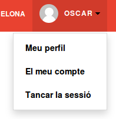
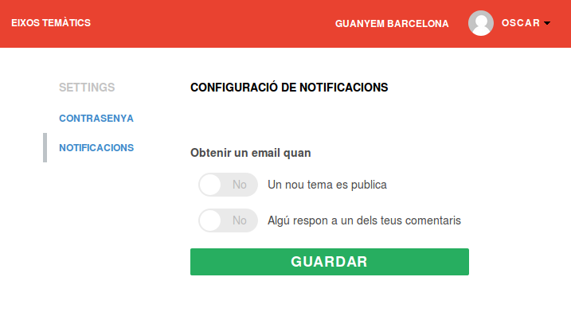

Notificaciones
Para facilitar los hilos de discusión de la herramienta puedes configurar las notificaciones. Recomendamos seleccionar la segunda opción: "Algú respon a un dels teus comentaris. Por defecto vienen desactivadas.
Para acceder a configuración de notificaciones:
1 Clic sobre icono de perfil y seleccionamos "El meu compte"

2 Una vez dentro seleccionamos "Algú respon a un dels teus comentaris" (Alguien responde a alguno de tus comentarios.
3 Damos a guardar
